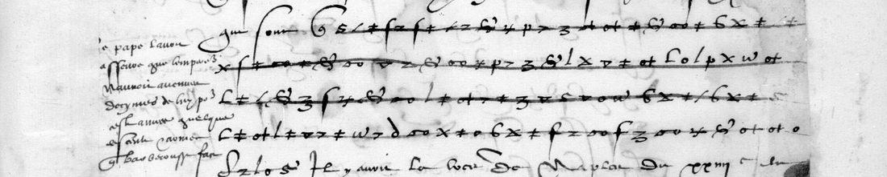
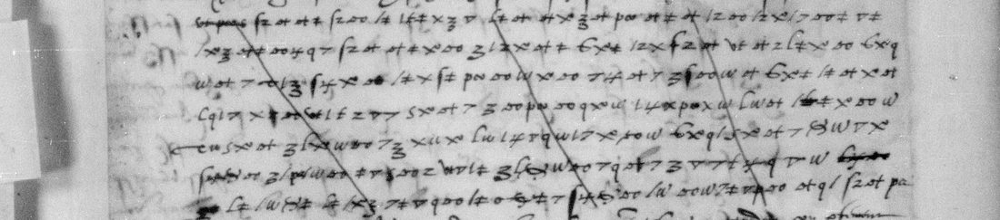

01 The documents and the key
Georges de Selve (1508–1541), son of the first president of the Parlement of Paris and one of the two men in Holbein’s Ambassadors, was Francis I’s ambassador at Venice in 1535–36. Two of his despatches to the King carry cipher:
- DECODE R3697: BnF fr. 3091 f. 25r–v, no. 14, dated at Venice “IIIIe” (DECODE: 14) September 1535. A clear letter with eight cipher runs; four of them are ruled through by the decipherer with the plaintext written above or in the margin. The catalogue card put it in fr. 3045; it is in fr. 3091, in the same volume as letters of Raince and Gramont read earlier here.
- DECODE R4232: BnF fr. 3045 ff. 42–49, no. 31, “A Venise, ce cinquiesme de juillet mil cinq cent XXXVI”, signed “G. de Selve e. de Lavaur”. Fourteen pages, cipher on ff. 43v, 44r, 44v, 45r and 48r.
Satoshi Tomokiyo’s cryptiana gives the key as “Selve’s Cipher”, reconstructed from the 1536 letter, and names fr. 3091 f. 25 as the same cipher: a simple substitution with an invented sign for each letter, two signs for a, three for e and three for l, and a null. No text of either letter had been published. Ernest Charrière’s Négociations de la France dans le Levant (vol. I, 1848) prints four other Selve letters of 1535–36, which are in clear, but not these two.

The letters themselves add to the table. There are further homophones: a curled d-shaped sign for a, a tall looped sign for f, and a Latin R for o in the 1535 letter. The slash stands for c as well as l, and the two hooks for c and d are used interchangeably, so the French decides. X serves m as well as u. Most striking, the cipherer puts a null between doubled letters: Suis·ses, ambas·sadeur, ar·rivé, af·faires, oc·casion. The null is a small p joined to an e-sign, a vf shape, an upright S or a dot. He also writes one in mar·chant and Empe·reur. One six-sign group on f. 44r does not spell anything under the table. The decipherer’s gloss reads it “monsr de Rang…”, so it is a name code, very likely for Guido Rangone.
02 The letter of 5 July 1536
Charles V was then gathering the army with which he would cross the Var into Provence on 25 July. Selve reports what is thought at Venice of his plan. The cipher is shown in roman type, and the clear words that frame it are in brackets.
[… la ville fut] en tres grand danger, combien que le nombre des assiegeans fust sans comparaison moindre que celuy qu’il entend d’y mener. Et comme ainsi soit que ladicte ville soit prenable, comme il en faict son compte, estant une clef de vostre royaulme si importante comme elle est, ce luy semble que, la voyant en dangier, vous vous vouldrez tirer aupres avec vostre puissance pour la secourir. [… son] allee a Marseille sera cause de luy donner l’occasion du combat [qu’il desire … ou bien le tiendra vostre puissance] loing, sans secourir ladicte ville, qu’il en viendra au dessus et la conquestera, [qui est bien la chose que plus il desire, car elle le feroit] patron de la Prouvence, et ne luy resteroit pas beaucop a gaigner pour avoir le passaige franc par terre d’Italie en Espaigne, comodité pour luy si grande qu’il ne la sçauroit cher achapter; et vous leveroit la navigation de la mer Mediterrenée, lequel luy asseureroit Gennes, Naples et Sicille.
[Et quand les predictes raisons que] l’invitent a ladicte entreprise de Marseille, luy semble qu’estant vostre armee de mer dans le port de ladicte ville, qu’elle ne luy peult eschapper, aiant armee de mer plus puissante qui sera suffisante pour la garder de sortir. [Et estant ledict] port tellement exposé a la baterie de ceulx qui seront assis du costé de la montaigne de la Garde, qu’il n’y aura vaisseau qui s’y peusse saulver dedans.
[f. 44v:] [Sire, ledict Sr] de Vaulx est tousiours d’oppinion que pour la sauveté de voz galeres […] de mettre hors vostre armee de mer et l’envoyer vers Naples. [Ce qui … seullement la vous] pourroit conserver, mectant dessus nombre de gens de guerre suffisant.
[f. 45r:] … le retardation n’a esté cause en voz affaires; le bruict qui s’est faict par dela, lequel a mon advis se pourra estre amorty. [… audict] sr(?) de la Forest du [N]e de may […] a l’expresse rupture de la guerre d’entre vous et l’Empereur.
[f. 48r:] … le Pape l’avoit asseuré que l’Empereur n’auroit aucunes decimes de luy pour ceste annee, quelque descente et armee que Barbarousse face.
In English. Marseille would be in great danger even with far fewer besiegers than the army the Emperor means to bring. It can be taken, as he reckons, and it is a key to the kingdom, so he expects the King to march to its relief. That would give him the battle he wants. If the King stays away, he takes the town. Marseille would make him master of Provence and give him a free land road from Italy to Spain, which he could not buy too dearly. It would also take the Mediterranean from France and make Genoa, Naples and Sicily safe for him. His stronger fleet would keep the French galleys shut in the port, and guns on the hill of Notre-Dame-de-la-Garde would leave no ship safe there. De Vaulx advises sending the fleet out towards Naples with enough soldiers aboard. Jean de La Forest, the King’s envoy at the Porte, has written of an open breach with the Emperor. The Pope has promised to grant Charles no clerical tenths that year, whatever landing or fleet Barbarossa brings.

03 The letter of 14 September 1535
fr. 3091 is known only from a black-and-white film scan, and the hand is looser. It needed three passes. The first applied the table as published. The second added the new signs, and the third used the decipherer’s glosses as cribs for the struck runs. DECODE’s own images of the record are screenshots of the same film at lower resolution.
[f. 25r] […] au marchant [gloss: “au marchant”] […] ung sansacque cy prochain [gloss: the same; “a sanjak-bey near here”] …
[Il est force, Sire, qu’il] passe par le chemin des Suisses, car l’aultre ne luy seroit pas seur, a cause que l’ambassadeur qui est [..] ça(?) pour l’Empereur, tost apres que le susdict marchant fust arrivé, comme des l’heure [.]e fus adverty, meu de coniecture qu’il fust venu pour aller en France, a pr[…] Anthon[e](?) de Le[…](?) de luy tenir le guet, pour le retenir s’il passe par …
[… ledict Gueny(?)] marchant, [a]insi [comme …] [….] ambassa[deur] luy avoit dict qu’il seroit bon qu’il trouvast façon, soubz umbre de marchandise ou d’aultre occasion, de faire son voyage en France et aller en vostre court, pour entendre en quelz termes estoient vos affaires avec l’Empereur, et s’il se faisoit point quelque accord entre vous …
[struck; gloss: “Il a consumé ses facultez et la plus part de ses amys … et grand du T[urc](?)”] … ses amis et gran[d] … avoit …
[f. 25v, struck; margin: “en Hongrie — Hiero[nimo] … — amiablement pour la charge qu’il a de Vesprym de la guerre …”] …tretienent(?) amiablement pour la charge qu’il a de Vesprim de la guerre(?) en luy … on fait … contre ses …
[… entreprinse cy dessus,] ne failloient pas d’adviser et faire adviser par d’aultres des occurrances de ça, sans especifier aultrement; entendre, et les advis qu’ilz donnent au Turc, et qu’ilz luy font donner par le marchant susdict, [.] quand en ont quelquefois tenu propos comme d’eux deux(?), [vous] sçaurés(?) …
In English. A merchant must travel to France by the Swiss road, because the other route is not safe for him. As soon as he arrived, the Emperor’s ambassador at Venice guessed that he was going on to France. He asked someone, probably Antonio de Leyva, governor of Milan (the name is not secured), to watch for him and hold him if he came that way. The same Imperial ambassador had earlier told the merchant to find a way, under colour of trade, to go to the King’s court and learn how the King stood with the Emperor, and whether any agreement was being made. The merchant, in other words, was being used as an informant. The verso turns to a Hungarian matter (a Hieronymus and the see of Veszprém) and to persons at Venice who report the news of the place and pass advice to the Turk through the same merchant.

04 Method
The cipher runs were located on the Gallica images and cut into strips of three to five lines. Each page went to a separate transcription pass, which read every sign under the table and wrote the French. Doubtful spots were then re-read on the native files at full resolution: an eleven-sign “verb” on f. 48r turned out to be ceste annee with a null in the middle, and a four-sign word on f. 45r is guerre. Wherever the King’s decipherer left a gloss, it was compared letter by letter. On the 1535 letter the glosses also served as cribs, lining the known plaintext up against the struck signs; that is how au marchant, ung sansacque cy prochain and amiablement pour la charge qu’il a de Vesprim were confirmed. Counts are measured on per-sign files, with one character per sign and unread signs marked: 2,248 of 2,481 non-null signs read (90.6%). R4232 is 1,417 of 1,430 plus the glossed name code; R3697 is 831 of 1,051, and 709 of 747 outside the struck runs.
05 What remains
- 1536 letter: 13 single signs, all blots, corrections under the ruling or one slip; none affects the sense. The day in “du [N]e de may” is a figure that the decipherer copied without resolving. The crossed sign before “de la Forest” is taken as an abbreviation for sieur (M). The name code is read only through its gloss (C).
- 1535 letter, struck runs (182 signs): the decipherer’s ruling runs through the middle of every sign, and the film scan cannot separate the two. The glosses give most of the plaintext. The strike ink is lighter than the cipher ink, so a colour image of the leaf would very likely read them.
- 1535 letter, f. 25r: the stretch “a pr[…] Anthon[e] de Le[…]” (17 signs). A blot and two cancellation strokes cross four of the signs; Antoine de Leyve fits the sense and the legible shapes, but is not secured (I). Four signs before ambassa[deur], two after est and the first sign of r7 fit no word. Five signs were erased by the writer, and one is a solid blot.
- 1535 letter, f. 25v: the last cipher group before the text breaks into struck clear writing (seven signs), a lone a before quand, and d’eux deux against d’eux vous (M).
- Readings marked (?) in the text above are M or I; everything else is H or C. The sibling fr. 3019 f. 97r (Rodez and Selve, 16 November 1536) carries three short glossed runs in the same cipher, and none of them helps with the open name.
06 Sources
- BnF, Français 3045, ff. 42–49, no. 31: Gallica btv1b9060156p, views 82–95 (cipher on views 84, 85, 86, 88, 94).
- BnF, Français 3091, f. 25, no. 14: Gallica btv1b9060253s, views 27–28.
- DECODE records R3697 and R4232 (“Non-decrypted”).
- Satoshi Tomokiyo, cryptiana, page on the ciphers of Francis ISatoshi Tomokiyo, “French ciphers during the reign of Francis I”, section on BnF fr. 3045:rsquo;s reign, section on BnF fr. 3045: key table “Selve’s Cipher” (cryptiana, francis.htm).
- Sibling: BnF fr. 3019 f. 97r (Gallica btv1b9059994n, view 151).
- E. Charrière, Négociations de la France dans le Levant, vol. I (Paris, 1848), pp. 265–320 (Gallica bpt6k1145214): other Selve letters of 1535–36, not these.
Per-sign files, the key as used, the three passes and the notes: selve1535/ in the repository.